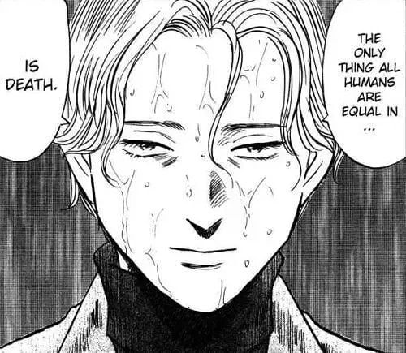

Kamu punya cita-cita besar. Kamu percaya dunia bisa lebih adil, lebih baik, lebih benar. Kamu nyebut diri kamu idealis seolah itu posisi paling mulia yang bisa diambil manusia.
Nietzsche bakal bilang sebaliknya: idealisme adalah bentuk nihilisme paling rapi yang pernah diciptain manusia.
Begini logikanya.
Nihilisme, dalam artian paling sederhana, adalah keyakinan bahwa dunia ini sebagaimana adanya, di sini, sekarang tidak cukup. Nggak punya makna sendiri. Nggak punya nilai inheren. Dan justru karena itu, dibutuhkan sesuatu di luar dunia ini cita-cita, dunia ideal, masa depan sempurna buat ngasih makna ke dunia yang “kosong” ini.
Coba pikir. Bukankah itu persis apa yang idealisme lakuin?
Idealis bilang: dunia sekarang itu rusak, belum sempurna, harus diubah jadi sesuatu yang “seharusnya”. Ada bayangan dunia ideal entah itu masyarakat tanpa ketidakadilan, versi diri kamu yang “sempurna”, atau masa depan yang “seharusnya” terjadi dan dunia yang ADA sekarang cuma dianggap bayangan pucat dari yang seharusnya.
Itu bukan mencintai dunia. Itu menolak dunia dan berharap ada dunia lain yang lebih layak dicintai.

“Satu-satunya hal yang membuat semua manusia setara… adalah kematian.”
-Johan Liebert
Nietzsche nyebut pola pikir ini punya akar yang sama persis dengan agama yang paling dia kritik: ada “dunia sejati” (surga, ideal, utopia) yang dianggap lebih real dan lebih berharga daripada dunia yang kamu tinggalin sekarang. Bedanya cuma nama. Orang religius nyebutnya surga. Idealis sekuler nyebutnya masa depan yang lebih baik, revolusi, atau “versi terbaik dari diriku”.
Sama-sama nolak dunia nyata di depan mata, demi sesuatu yang belum dan mungkin nggak akan pernah ada.
Yang paling ironis: makin keras kamu idealis, makin besar potensi kamu jatuh ke nihilisme yang sebenarnya.
Karena dunia ideal itu, secara definisi, nggak pernah sepenuhnya kesampaian. Selalu ada jarak antara “yang seharusnya” dan “yang ada”. Idealis yang jujur ke diri sendiri bakal ketemu titik ini cepat atau lambat: dunia nggak pernah nyampe ke standar yang dia bayangin. Dan di situlah nihilisme yang sebenarnya muncul bukan sebagai lawan idealisme, tapi sebagai hasil akhirnya. Kekecewaan total. “Kalau dunia nggak bisa jadi seideal itu, berarti nggak ada gunanya usaha sama sekali.”
Idealisme dan nihilisme itu bukan dua kutub berlawanan. Mereka satu siklus yang sama idealisme adalah nihilisme versi awal yang masih punya harapan palsu, dan nihilisme adalah idealisme yang akhirnya capek berharap.
“Idealisme bukan lawan dari nihilisme.
Ia hanya nihilisme yang masih punya harapan.”